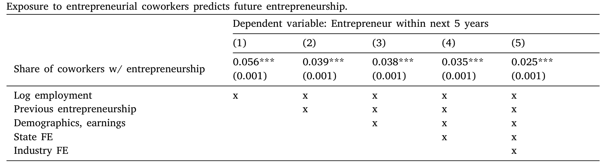
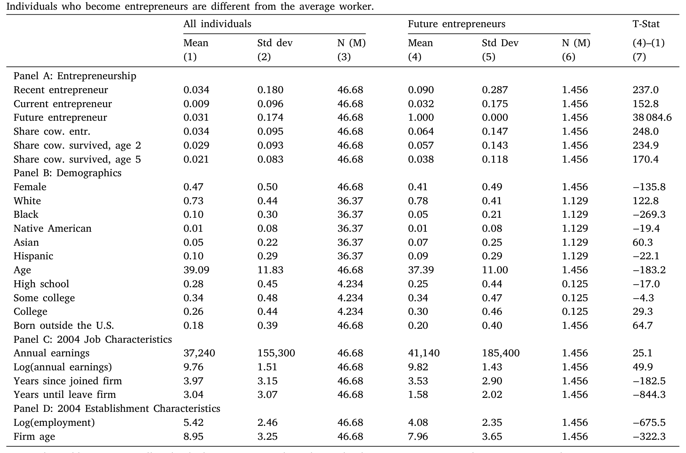
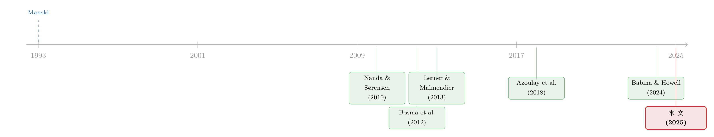

创业会「传染」吗？——但它只在同类人之间传染
本文读的是 Wallskog (2025, Journal of Financial Economics)：用美国普查局覆盖四千多万人的雇主—雇员匹配数据，作者发现创业是会「传染」的——和过去带过年轻公司的同事共事，你日后自己下海创业的概率会显著上升；但真正扎心的一点是，这种传染几乎只发生在「同类人」之间——女性只从女性创业同事身上学，黑人则几乎从谁身上都学不到。于是，本该把不同背景的人聚到一起的职场，反而把创业上的性别与种族鸿沟，又悄悄地复制了一遍。
1 引言：一个让人不太舒服的事实
先看两个数字。在 2000 年代中期的美国，新创企业的领导者里，女性只占 41%，而女性占整个劳动力的 47%；更刺眼的是，黑人只占新创企业领导者的 5%，而他们占劳动力的 10%（见表 1）。如果把镜头拉到风险投资 (venture capital, VC) 支持的明星创业公司，差距更夸张——女性不足 9%，黑人不足 0.5%（Calder-Wang and Gompers, 2017）。
创业被普遍当作经济增长的引擎：年轻公司贡献了不成比例的就业增长（Haltiwanger et al., 2013）和创新（Klenow and Li, 2021）。可问题是，从「打一份普通的工」到「自己开一家公司」，这条路布满了关卡——想点子、学怎么把一家公司运转起来、找钱、找资源。而这些关卡，对不同人群「咬」的力道，显然是不一样的。
于是一个朴素的问题浮上来：这些差距是从哪里来的，又是怎么被维持下去的？ 过去的文献大多盯着「钱」——少数族裔创业者更难拿到融资（Ewens, 2023）。但这篇论文把目光投向了另一个更日常、也更被忽视的渠道：你身边的同事。
2 一个朴素的想法：创业是会「传染」的吗
想法本身并不新鲜。一个带过年轻公司的前创业者，坐在你旁边的工位上，他可能会跟你聊起当年怎么注册公司、怎么搞定第一个客户、怎么熬过没有现金流的那几个月；他也可能对你那个还在脑子里的点子提一句关键的建议。换句话说，前创业者既能「鼓舞」(inspire) 你，也能「教」(teach) 你。
为什么是职场？因为相比 MBA 课堂、社区、家庭，职场可能是普通美国人接触到「不同背景的人」最多的地方。Chetty et al. (2022) 就发现，低社会经济地位的人在工作场所接触到高地位同伴的机会，要高于在中学、宗教团体或社区里。Nanda and Sørensen (2010) 早就提出过这个猜想：如果创业同事真能传授「好建议」，那职场就可能为一大批人——包括女性和黑人这样的创业「少数派」——打开一扇门。毕竟，有同事的人，远比能读 MBA 的人多得多。
（关于「创业能不能被一种日常经历训练出来」，可参见《零工经济，是一所创业学校吗？——来自全美报税记录的证据》，那篇同样用全美行政记录追问创业的「养成」路径。）
接着，一个自然的问题是：这扇门，到底是为所有人打开的，还是只为某些人打开的？这正是全文的悬念所在。作者把整个故事拆成三步——对应新闻学里的「五个 W」：「学到了什么」(what)、「谁在学、何时何地学」(who/when/where)、以及「为什么、怎么学」(why/how)。
3 识别策略：在「无法随机分配同事」的世界里讲因果
这一步是全文最该被苛刻审视的地方，作者自己也毫不回避：人不是被随机分配同事的。如果只是发现「身边创业同事多的人更爱创业」，那完全可能是「选择」——爱折腾的人本来就扎堆在某些公司里。这就是同行效应研究里经典的反射问题 (reflection problem, Manski, 1993)。
作者没有一个干净的外生冲击，而是老老实实地走「可观测变量选择」(selection on observables) 这条路：先估一个带丰富控制变量的回归，再用一连串检验去「围剿」那些会污染因果解释的隐忧。基准回归大致是这样一个线性概率模型：
这里的逻辑是：在控制住这些变量之后，「身边有多少创业同事」就被当作近似外生。但论证不能止于嘴上说说，作者做了三件关键的事来加固因果解释：
第一，加入雇主固定效应 (employer fixed effects)。 在面板回归里，只用「同一家雇主内部、创业同事份额随时间的变化」来识别 β，估计依然稳健——这就排除了「某些公司天生就是创业温床」这类时不变的雇主特征。
第二，比「同地点」与「同公司不同地点」。 在横截面回归里，传染效应高度集中在同一个 establishment（同一处经营地点）的同事之间：如果创业经验来自你身边朝夕相处的同事，效应很强；如果只是来自同一家公司在别处的员工，效应就弱得多。这正符合「真的是面对面学来的」这一故事，而不是抽象的公司氛围。
第三，用「个人自己的创业史」做安慰剂。 一个尖锐的担忧是：会不会是「老创业者」彼此吸引、扎堆在同一处，日后又各自再创业？作者检验发现，那些自己本来就是近期创业者的人，在与创业同事共事后，并没有更可能再次创业——这说明估计出来的传染，不是「老창业者互相吸引并重复创业」造成的假象。

Table 2
这套组合拳当然不等于一个随机实验，但它把最容易想到的几个「选择」解释逐一压了下去。
4 数据：四千万人的「同事网络」
真正让这篇论文与众不同的，是它的数据规模。作者用了美国普查局的几套行政数据：核心是 纵向雇主—家庭动态数据 (Longitudinal Employer-Household Dynamics, LEHD)——一套基于各州失业保险记录、几乎覆盖全部正规就业者的雇主—雇员匹配数据；再用 纵向企业数据库 (Longitudinal Business Database, LBD) 补上企业的进入与营收信息。
- 观测单位：个体—雇主—年。同事被定义为「同一年、同一雇主下的其他所有人」。
- 样本期与范围：LEHD 取 1993–2013 年、18 个州的平衡样本；主分析锁定在样本中段的 2004 年，这样既能回看此人过去、又能追踪其未来。
- 规模：超过 四千万 美国人。
- 「创业者」怎么定义：跟随近年文献（Agarwal et al., 2016；Kerr and Kerr, 2017；Azoulay et al., 2018），把一家新公司开张第一年里收入排名前三的人算作创业者。这未必恰好是法律意义上的「创始人」（创始人早期常不领薪），但它稳健地抓住了「在年轻公司里掌实权、并因此积累了创业经验的人」。
值得强调的是，本文研究的是「日常创业」(everyday entrepreneurship)——开餐馆、开小店的那种，而不是 VC 撑腰的科技独角兽。这恰恰是经济中最「众数」的创业形态。
表 1 先给了一张直觉图：未来的创业者，相比普通员工，更年轻、更可能是男性、受教育程度更高、更可能是白人或亚裔、更可能在海外出生、收入更高、且在更小更年轻的公司工作。最关键的一行是：未来创业者身边「创业同事份额」均值为 0.064，几乎是全样本 0.034 的两倍。

Table 1
5 第一步「what」：传染是真的，但力道有限
然后，结果来了。如图 1（对应表 2 第 5 列的线性设定）所示：身边创业同事份额每高出一个标准差（约 10 个百分点），此人未来五年内成为创业者的概率，相对于平均水平会上升约 8%。 注意这是「相对」幅度，不是 8 个百分点——考虑到创业本身就是小概率事件，这个推力不算微弱，但也谈不上排山倒海。
用作者的话说，暴露于创业同事，像是在你背后轻轻推了一把 (nudge)。这一步坐实了「传染存在、且方向为正」。但真正有意思的故事，还在后面两步。
6 反转：这场「传染」，只在同类人之间发生
接着，一个自然的问题是：这一把「推力」，是公平地推向所有人的吗？
这里出现了全文最重要的反转。作者把样本按性别和种族切开，发现：传染效应几乎只在同一人口群体内部发生，甚至根本不发生。
- 女性只从她们的——本就稀少的——女性创业同事身上学到创业；男性创业同事对她们几乎没有推力。
- 黑人则几乎从任何同事身上都学不到创业，不论那位同事是什么种族。
于是，低创业率为什么会被「锁死」，就有了两层机制。第一层是「暴露不平等」：黑人本就在创业同事份额更低的公司里工作——他们没站在「对的」位置上去捕捉学习机会。第二层是「条件传染率更低」：哪怕给定了同样的暴露，少数群体能从中学到的也更少。两股力量叠加，意味着指望靠职场连接来「孵化」少数群体的创业，基本是奢望。
作者做了一个「信封背面」的反事实测算：如果把性别与种族之间的传染率拉平，性别创业鸿沟会缩小约 10%，种族鸿沟会缩小约 5%。 换句话说，本该是「熔炉」的职场，在创业这件事上反而成了鸿沟的复制机——它把不同背景的人放在一个屋檐下，却没能让他们真正互相「传染」。
这是全文最反直觉、也最值得停下来想的一点：我们常以为「多元的职场」会自动缩小机会差距，但本文说——接触本身不等于学习。同类之间才传得动，于是接触越多，差距可能越被固化。
（这种「机会被结构性地锁在某些人之外」的逻辑，和《买不起的，其实不是房子，而是机会——首付约束如何把黑人家庭锁在「低机会」的地方》里讲的故事，有相通的味道。）
7 第三步「why / how」：是「鼓舞」，还是真本事
但真正关键的一步在于：当传染确实发生时，它传过来的到底是什么？ 是单纯的「鼓舞」——让人头脑一热就下海——还是能让新公司更高产的真本事？这关系到这种传染对生产率到底是好是坏。
作者顺着「创业同事的公司质量」往下追，结论很微妙：
- 平均而言，被创业同事「带出来」的人，开的公司更小、营收更低、更容易死。 这说明在多数情况下，传染传的是「鼓舞」或「开公司的流程性知识」——它把一些本来生产率没那么高的人也推上了创业这条路，于是平均质量被拉低。
- 但是，如果你「运气好」，身边的创业同事当年带的是更大、活得更久的公司，那么你自己开的公司也更可能更大、更可能存活。这说明确实存在「技能溢出」——只不过它的天花板，被一个朴素的现实压住了：你能在职场里遇到的前创业者，绝大多数都不是超级明星。
- 最后，作者没有找到太多「传染缓解了融资约束」的证据；他更倾向于把这种溢出解读为降低了信息摩擦 (information frictions)——传的是「怎么做」的知识，而不是「钱」。
（关于「员工带走的知识本身就是一种被转移的价值」，可对照《被「偷走」的增长：当员工带走的知识，反而成了让他卖力的理由》。）
8 文献脉络
这条研究线索的起点，是同行效应识别上的老大难——Manski (1993) 的反射问题，加上 Sacerdote (2014) 对准实验证据的梳理，奠定了「怎么才算可信地识别出同伴影响」的方法论底色。

把「创业」具体接到这条线上的，是 Nanda and Sørensen (2010)：他们用丹麦一个小样本的同事数据，找到了支持「学习」的扩展边际溢出证据，但受限于数据，他们既说不清「谁受影响」，也说不清「传了什么」。随后，Bosma et al. (2012) 用问卷证据补充了「前同事和雇主可以充当创业榜样」这一渠道；Lerner and Malmendier (2013) 则利用哈佛 MBA 同学的随机分配，干净地识别了课堂里的创业溢出，Shue (2013) 用类似的 MBA 随机分组研究高管网络对公司政策的影响。家庭维度上有 Lindquist et al. (2015)、Akcigit et al. (2021)、Djankov et al. (2006)，企业 R&D 维度上则有 Babina and Howell (2024)。
本文所处的位置很清楚：它继承了「创业会通过同伴传染」这个基本故事，但用一套覆盖全美、跨人群、带企业绩效信息的大数据，第一次系统地回答了前人答不了的两个问题——谁在受影响，以及溢出如何影响生产率。它的贡献不在于一个更巧的识别，而在于「把这件事的全貌，在国家尺度上画了出来」。
9 评论与延伸（Q&A + 研究方向）
(a) 几个可能的疑问
Q：这篇论文到底算不算「因果」？
严格说，它不是一个随机实验，作者自己也承认「人不是被随机分配同事的」。它走的是「可观测变量选择 + 一系列加固检验」的路子：雇主固定效应排除时不变的公司特征，「同地点 vs 同公司异地点」对比锁定面对面渠道，「自身创业史」检验排除老创业者扎堆的假象。这些都让选择性解释更难成立，但残余的「时变、个体层面的分选」仍无法被完全排除。把它读成「强有力的相关证据 + 被层层削弱的内生性担忧」，比读成「干净因果」更稳妥。
Q：把「收入前三」算作创业者，会不会太宽？
这确实不是法律意义上的创始人。但作者的目的恰恰不是抓「谁签了注册文件」，而是抓「谁在年轻公司里掌实权、并因此积累了可传授的创业经验」。论文在附录 A.1 里对这个定义做了稳健性检验。对「日常创业」这个研究对象来说，这个定义是贴切的——它不是为了研究独角兽。
Q：8% 这个数字，是 8 个百分点吗？
不是。它是「相对于平均创业概率」的相对提升：同事创业份额每高一个标准差（约 10 个百分点），未来五年创业概率相对上升约 8%。由于创业本身是小概率事件，这个相对量级对应的绝对概率变化并不大——这也和「平均而言只是被轻推一把、催生的多是平庸公司」的结论自洽。
Q：为什么传染会「只在同类人之间」？这是品味问题还是信息问题？
论文给的证据指向信息/认同渠道：女性只从女性创业同事身上学、黑人几乎从谁身上都学不到，更像是「我能不能把对方的经验投射到自己身上」的认同与信息可得性问题，而不是融资约束（作者没找到太多融资渠道的证据）。Bennett and Robinson (2024) 的问卷证据也呼应这一点——黑人潜在创业者更少与人讨论自己的创业点子。
Q：那「职场让人更平等」的直觉，错在哪里？
错在把「接触」等同于「学习」。本文最锋利的地方就是把这两者掰开：职场确实把不同背景的人放到了一起（接触上升），但有效的学习只在群体内部发生。于是接触越多，反而越是在各自的群体内复制原有的创业率差距——这就是为什么作者说职场连接可能「加剧」而非缓解多样性问题。
Q：传染对生产率到底是好是坏？
看你遇到谁。平均而言是「坏」的——它把生产率偏低的人也推上创业路，催生的公司更小、更短命；但如果你的创业同事当年带的是成功的大公司，真本事的溢出就会让你的公司也更成功。问题在于，普通人能遇到的前创业者，绝大多数不是明星。所以「技能溢出」的空间真实存在，却被现实的「平庸供给」卡住了上限。
(b) 几个可能的研究问题与提案
1. 创业溢出与信贷可得性（公司债/信用市场方向）
【经济故事】本文说溢出降低的是「信息摩擦」而非「融资约束」。那么，被同事「带出来」的创业者，在向银行或债权人借钱时，是否拿到更差的条款？如果他们更可能是「被一时鼓舞、生产率偏低」的边际创业者，信贷市场是否能识别并对其定价？ 【可行性】中。需要把类似 LEHD 的雇主—雇员数据与小企业信贷登记/银行贷款数据匹配；识别上可沿用本文「同地点 vs 异地点同事」的设计。难点在数据匹配的可得性。
2. 移民/外籍同事的创业溢出（外资持有人相邻方向）
【经济故事】LEHD 含有「出生国」信息，而本文显示传染高度依赖「同类」。那么移民创业同事是否主要把创业「传染」给同样在海外出生的人？这对理解移民创业飞地的形成机制很有意思。 【可行性】高。完全可以在本文同一框架内、按出生地切分样本来做，无需新增数据，识别策略可直接复用。
3. 把「同类传染」放进政策反事实
【经济故事】作者算了「拉平传染率能缩小鸿沟 10%/5%」。一个自然延伸是：如果通过岗位轮换、导师匹配等干预，人为提高少数群体对「对的同事」的暴露，效果会有多大？这是把描述性发现推向政策设计。 【可行性】中。最干净的做法是找一个真实改变了同事构成的准实验（如并购、关厂导致的工人重新匹配），用它来检验「外生改变暴露」是否真能撬动创业。难点是找到这样的冲击。
4. 溢出催生的公司，进入信用市场后的存活与违约
【经济故事】既然平均被「带出来」的是更平庸、更短命的公司，那这些公司一旦举债，其违约率是否系统性更高？这把「创业溢出」与「信用风险定价」连了起来。 【可行性】中低。需要把创业者身份追踪到其公司的债务与违约记录，数据链条较长，但概念上 doable。
评论与延伸：我的判断
这篇论文最大的贡献，不在方法的精巧，而在视野——它第一次用国家尺度的全员数据，把「创业会通过同事传染」这件原本只在丹麦小样本、哈佛课堂里被零星观察到的事，画成了一幅完整的、带人口结构与企业绩效的全景图。而它真正的思想贡献，是那个反直觉的命题：接触不等于学习，于是多元的职场反而可能固化创业上的不平等。 这个洞见的价值，超过任何单个系数。
我对识别的担忧也很直白。核心结论建立在「可观测变量选择」之上，雇主固定效应、同地点对比、自身创业史这三招确实削弱了最显眼的内生性故事，但「时变的、个体层面的分选」始终是悬而未决的——爱折腾、风险偏好高的人，可能既更爱往创业氛围浓的工位上凑，又更爱日后自己创业，而这部分分选未必被那组控制变量吸收干净。8% 的相对效应不大，也意味着它对残余偏误并不特别稳健。
后续我最想看到的，是一个能外生改变同事构成的冲击（并购、关厂、远程办公的普及）被嫁接到这套框架上——只有当「暴露」本身是被外力推着变的时候，我们才能真正把「传染」从「分选」里干净地剥出来。在那之前，这篇论文最好被读作一份极有说服力的、关于「创业不平等如何自我延续」的大规模描述性证据。
参考文献
Agarwal, R., Campbell, B. A., Franco, A. M., Ganco, M. (2016). What do I take with me? The mediating effect of spin-out team size and tenure on the founder–firm performance relationship. Academy of Management Journal 59(3), 1060–1087.
Akcigit, U., Alp, H., Pearce, J. G., Prato, M. (2021). Career choice of entrepreneurs, inventors and the rise of firms. Working paper.
Azoulay, P., Jones, B., Kim, J. D., Miranda, J. (2018). Age and High-Growth Entrepreneurship. NBER Technical Report.
Babina, T., Howell, S. T. (2024). Entrepreneurial spillovers from corporate R&D. Journal of Labor Economics 42(2), 469–509.
Bennett, V. M., Robinson, D. T. (2024). Why aren't there more minority entrepreneurs? SSRN 4360750.
Bosma, N., Hessels, J., Schutjens, V., Van Praag, M., Verheul, I. (2012). Entrepreneurship and role models. Journal of Economic Psychology 33(2), 410–424.
Calder-Wang, S. Q., Gompers, P. A. (2017). Diversity in Innovation. NBER Technical Report.
Chetty, R., Jackson, M. O., Kuchler, T., Stroebel, J., et al. (2022). Social capital II: determinants of economic connectedness. Nature 608(7921), 122–134.
Djankov, S., Qian, Y., Roland, G., Zhuravskaya, E. (2006). Entrepreneurship in China and Russia compared. Journal of the European Economic Association 4(2–3), 352–365.
Kerr, S. P., Kerr, W. R. (2017). Immigrant entrepreneurship. Working paper.
Lerner, J., Malmendier, U. (2013). With a little help from my (random) friends: Success and failure in post-business school entrepreneurship. Review of Financial Studies 26(10), 2411–2452.
Lindquist, M. J., Sol, J., Van Praag, M. (2015). Why do entrepreneurial parents have entrepreneurial children? Journal of Labor Economics 33(2), 269–296.
Manski, C. F. (1993). Identification of endogenous social effects: The reflection problem. Review of Economic Studies 60(3), 531–542.
Nanda, R., Sørensen, J. B. (2010). Workplace peers and entrepreneurship. Management Science 56(7), 1116–1126.
Rocha, V., Van Praag, M. (2020). Mind the gap: The role of gender in entrepreneurial career choice and social influence by founders. Strategic Management Journal 41(5), 841–866.
Sacerdote, B. (2014). Experimental and quasi-experimental analysis of peer effects: two steps forward? Annual Review of Economics 6(1), 253–272.
Shue, K. (2013). Executive networks and firm policies: Evidence from the random assignment of MBA peers. Review of Financial Studies 26(6), 1401–1442.
Wallskog, M. (2025). Entrepreneurial spillovers across coworkers. Journal of Financial Economics 170, 104077.